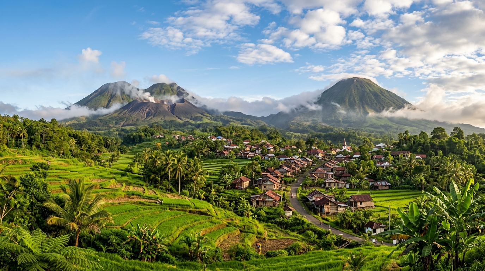
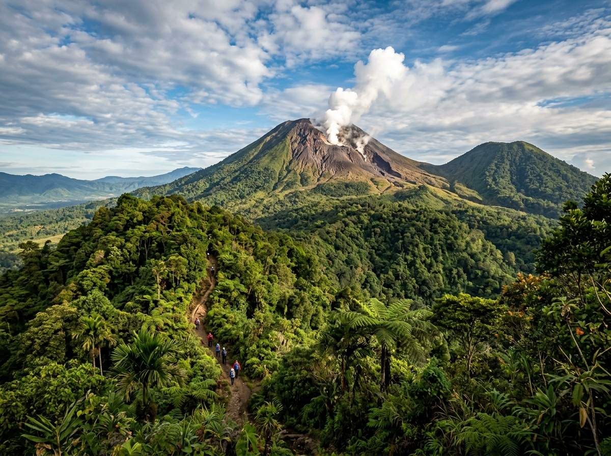
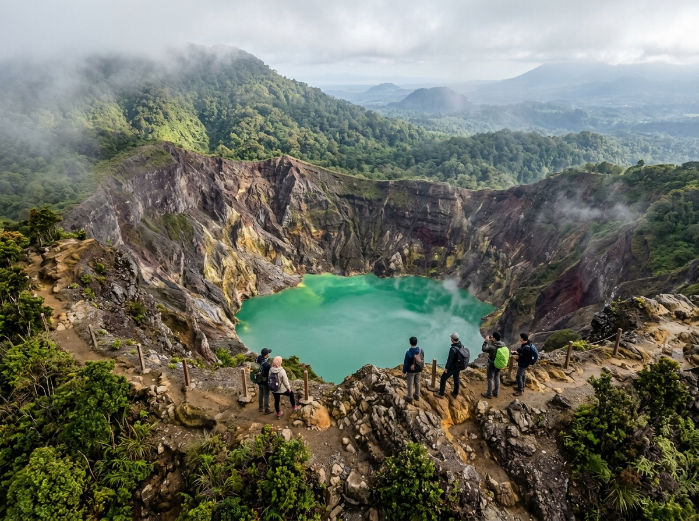

Pesona alam di antara dua gunung berapi — sebuah desa wisata di dataran tinggi Tomohon, Sulawesi Utara, yang menyimpan keindahan alam, kekayaan budaya, dan kehangatan masyarakat Minahasa.
Kelurahan Kakaskasen Dua terletak di Kecamatan Tomohon Utara, Kota Tomohon, Sulawesi Utara — diapit oleh dua gunung berapi aktif yang megah.

600
meter dpl
Kakaskasen Dua adalah kelurahan yang berlokasi strategis di dataran tinggi Tomohon, diapit oleh dua gunung berapi aktif — Gunung Lokon di sisi barat dan Gunung Mahawu di sisi timur. Dengan udara sejuk khas pegunungan dan pemandangan alam yang memukau, desa ini telah diakui sebagai salah satu desa wisata terbaik di Indonesia.
Selain pesona alamnya, Kakaskasen Dua juga dikenal sebagai sentra bunga utama yang mendukung kesuksesan Tomohon International Flower Festival (TIFF), serta kaya akan seni budaya Minahasa seperti Tari Kabasaran dan musik Kolintang.
0
jiwa
0
lingkungan
~90
menit berkendara
Top 75
ADWI 2023
Desa Kakaskasen Dua memiliki beragam keunggulan yang menjadikannya salah satu destinasi terbaik di Sulawesi Utara.
Masuk dalam 75 besar nominasi Anugerah Desa Wisata Indonesia (ADWI) 2023 sebagai desa wisata terbaik.
Sumber utama tanaman bunga untuk Tomohon International Flower Festival, festival bunga bertaraf internasional.
Berada di dataran tinggi dengan udara segar dan sejuk sepanjang tahun, ideal untuk relaksasi dan wisata alam.
Kaya akan seni budaya Minahasa — Tari Kabasaran, musik Kolintang, dan tradisi lokal yang masih lestari.
Dari pendakian gunung berapi hingga agrowisata bunga, Kakaskasen Dua menawarkan pengalaman wisata yang tak terlupakan.


Dukung ekonomi lokal melalui produk-produk unggulan yang dihasilkan oleh UMKM dan masyarakat Kakaskasen Dua.
Anyaman dan kerajinan dari bambu khas Tomohon, dibuat dengan teknik tradisional turun-temurun.
Hidangan ikan bakar dengan bumbu rica-rica khas Minahasa yang pedas dan menggugah selera.
Kopi arabika dataran tinggi Tomohon dengan cita rasa khas — ditanam di ketinggian 600 mdpl.
Berbagai kue kering khas Minahasa — panada, halua kenari, dan bagea sebagai oleh-oleh favorit.
Tertarik dengan produk kami? Hubungi kami untuk informasi pemesanan.
Potret keindahan alam, aktivitas warga, dan momen-momen istimewa di Kakaskasen Dua.
Panorama Desa Kakaskasen Dua
Gunung Lokon
Kawah Gunung Mahawu
Jangan ragu untuk menghubungi kami untuk informasi lebih lanjut mengenai desa wisata Kakaskasen Dua.
Alamat
Kelurahan Kakaskasen Dua, Kecamatan Tomohon Utara, Kota Tomohon, Sulawesi Utara 95416
Jam Operasional
Senin — Jumat: 08.00 — 16.00 WITA
Sabtu — Minggu: Tutup
Telepon
(0431) xxx-xxxx
kelurahan.kakaskasendua@tomohon.go.id
Utara
Kakaskasen Satu
Timur
Gunung Mahawu
Selatan
Kakaskasen Tiga
Barat
Gunung Lokon